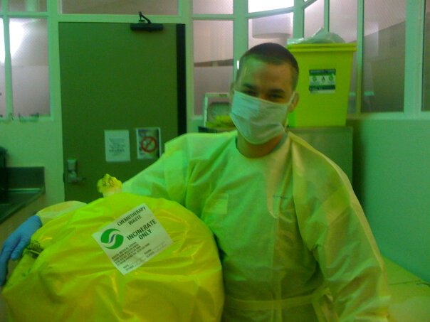

About Me
Hello, I'm Thomas Emmerling, a Tech Ninja and Data Wizard based in the Mid West. I specialize in code automation and reverse engineering. I've been involved in programming for 5 years, and I'm passionate about code development, problem solving, and ethical hacking.
In my free time, I enjoy playing Disc golf and being outdoors or the complete opposite and gaming on my PC and/or reading a book somewhere peaceful
I've found many passions in life, the strongest one is just trying to understnad and enjoy the complexities this world brings to us on a daily basis.
Favorite Quotes
"Success is not final, failure is not fatal: It is the courage to continue that counts."
"The best way to find yourself is to lose yourself in the service of others."